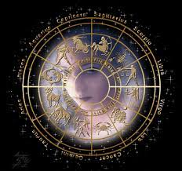

TAURO
Tauro pertenece a los signos fijos y simultáneamente es un signo de tierra. La proyección del Sol en su nacimiento suele influir para que sean personas firmes, decididas y constantes en varios sentidos. También adoran sentir seguridad, por eso la buscan tanto, es como una necesidad constante en sus vidas. Un Tauro es un ser decidido, pragmático y tiene una enorme fuerza de voluntad. Tiende a las ideas conservadoras, y como le gusta tanto la estabilidad, sus ideas son fijas… no hay manera de convencer a un Tauro de algo que vaya en contra de sus principios o de lo que piensa y siente, así que la terquedad es otra de sus características más evidente. Tienen una gran capacidad para evitar conflictos y disgustos, sin duda prefieren resolver sus problemas con pragmatismo; también tienen buen humor. Sin embargo, cuando pierden los nervios, son capaces de montar en cólera y mostrar un genio terrible. Los Tauro son personas sensuales que idolatran la belleza, la fidelidad y el cuidado; no obstante, el punto negativo es que tienden a la posesión. Su carácter romántico hace que disfrute sintiendo el amor de su pareja Piedras del zodíaco: Esmeralda, Diamante, Zafiro, Granate, Cuarzo rosa
Caída: Urano y Mercurio
pagina principal-pagina anterior. by: Maria Julieta Castrillon A. |
 |